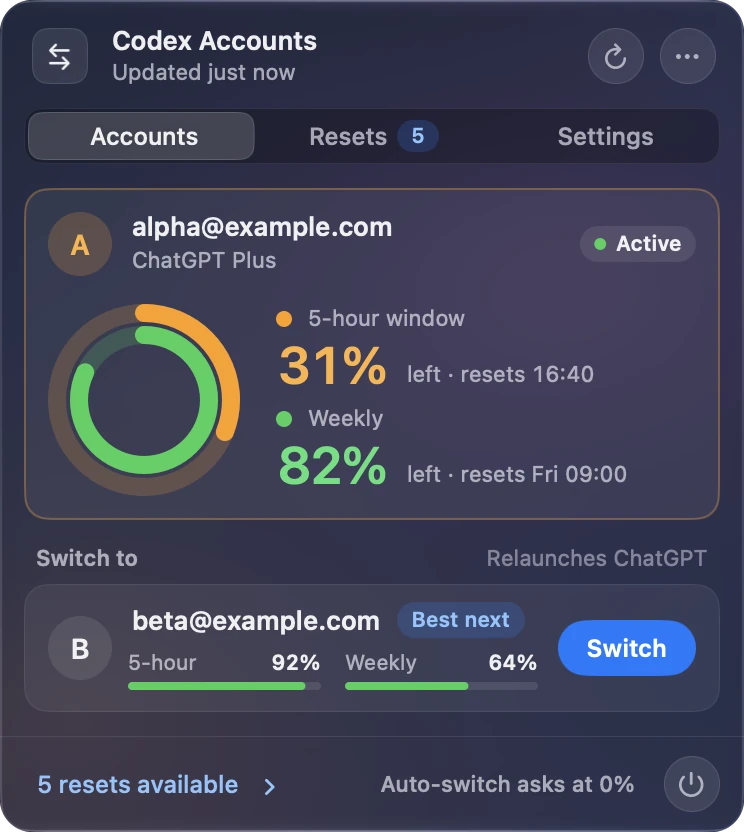
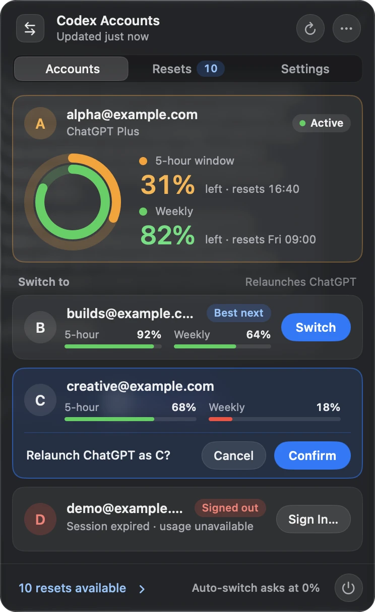
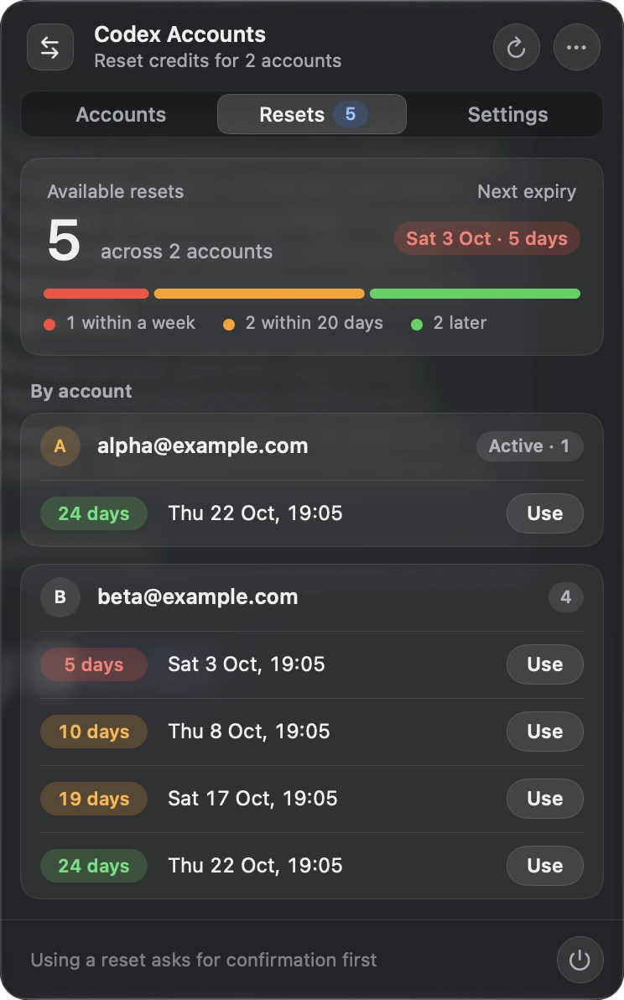
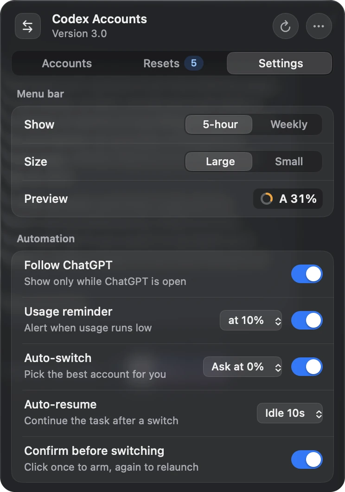

Switch Codex accounts without breaking your flow.
Codex Account Switcher lives in your Mac’s menu bar. It shows how much of each ChatGPT account’s 5-hour and weekly limit is left, moves you to another account in one click, and checks the switch worked before reopening ChatGPT.
Free and open source, for macOS 14 or later.

New in 3.0
A ground-up redesign for macOS 27, and a much lighter app underneath.
-
Liquid Glass, top to bottom
One glass panel with a standard toolbar and tabs for Accounts, Resets and Settings. It follows your transparency setting and looks at home in light and dark.
-
Limits you can read at a glance
Rings for the account you’re using, slim meters for the rest, and a hint for the account with the most room left.
-
Faster and lighter
Switches finish seconds sooner, the panel opens instantly, and the app does far less work in the background.

One click to switch, checked before ChatGPT reopens
Every switch follows the same careful routine, so an account change never leaves you half signed in.
- Saves the current session so nothing is lost.
- Switches account and confirms the new one is really active.
- If it isn’t, puts the previous account back and tells you why.
- Quits and reopens ChatGPT on the new account.
Want a safety catch? Turn on Confirm before switching and the panel asks once more before it relaunches anything.
Use reset credits before they expire
See every reset credit across your accounts, soonest first, coloured by how close each one is to expiring.
Using a credit always asks first. The app only reports success once ChatGPT confirms your limit really was reset, and it never retries a spend on its own.


Let it handle low limits for you
Private, and careful with your accounts
- Stays on your Mac
- It uses the sign-ins codex-auth already keeps. No analytics, no adverts and no extra account to create.
- Nothing sensitive in the code
- The repository and every screenshot are free of credentials, tokens and real account details.
- Never gets stuck
- Every command and request has a time limit, so a slow tool can’t freeze your menu bar.
- Diagnostics without secrets
- Copy a health report to share when something goes wrong, without exposing tokens or account IDs.
Set up in a few minutes
-
Download the app
Get version 3.0 from GitHub Releases, unzip it and move it to Applications.
-
Open it once
The app isn’t notarised yet, so the first time, right-click it and choose Open.
-
Add your accounts
Install codex-auth, then sign in once for each ChatGPT account.
npm install -g @loongphy/codex-auth codex-auth login
Needs macOS 14 or later (designed for macOS 27), the ChatGPT desktop app in Applications, and codex-auth.
Questions
Is this made by OpenAI?
No. It’s an independent, open-source tool that works alongside the ChatGPT desktop app.
Does it store my passwords or tokens?
No. Your saved sign-ins stay in codex-auth’s own folder on your Mac. The switcher reads them only to check your limits and reset credits, and never sends them anywhere else.
Can it spend reset credits by itself?
No. Using a credit always needs your confirmation, and the app never retries a spend automatically.
Why do I need codex-auth?
codex-auth manages your saved ChatGPT sign-ins. The switcher asks it to change account, then checks the change worked.
How many accounts can I use?
As many as codex-auth holds. The panel is designed around two to four, and lists every account you add.
Why does macOS warn me when I first open it?
The app is signed but not yet notarised by Apple. Each release includes a SHA-256 checksum so you can confirm the download is genuine.